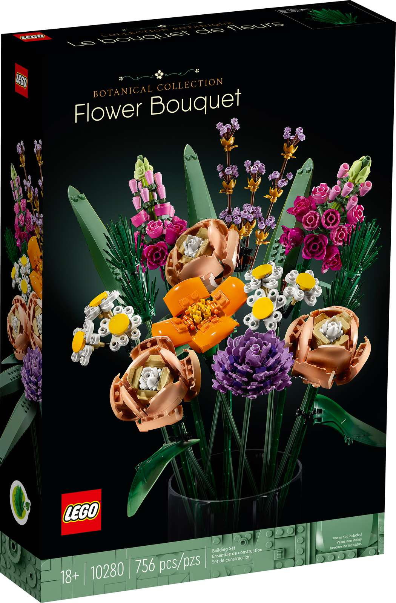

 |
|
|---|---|
| Flower Bouquet | $35.00 |
The Flower Bouquet Lego is set #10280 and an excellent set to add to your own lego collection! This set includes various flowers such as roses, snapdragons, daisies, lavender, aster, california poppy, long leaves, and bushy foliage stems. And the flowers and their colors all work so well together to create a beautiful display piece. Feel free to arrange the flowers in any way you please and even try including some of the other Lego Botanical sets to create a fully custom set! Everyone loves this set and it even has a rating of 4.6 stars, so it's worth it to buy! And this set is going to retire soon, so there really is no better time to buy it than right now!